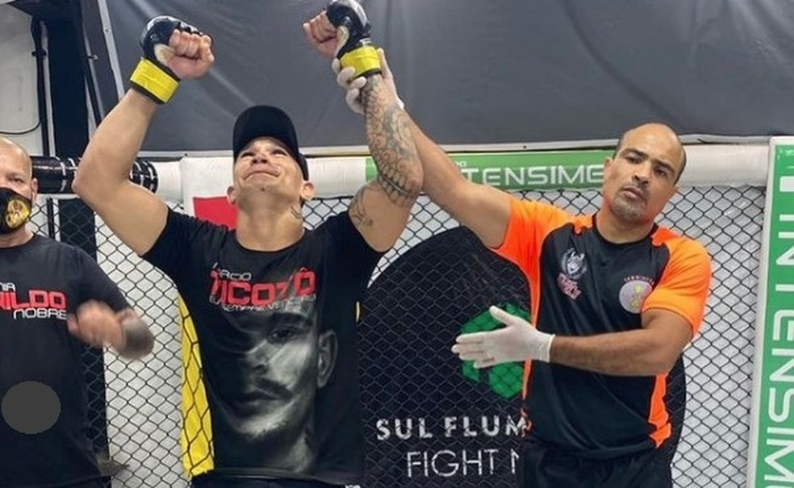
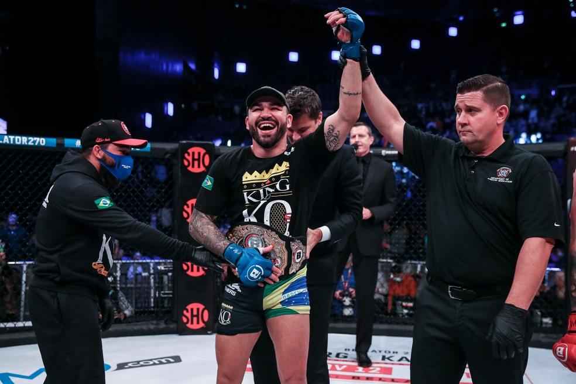
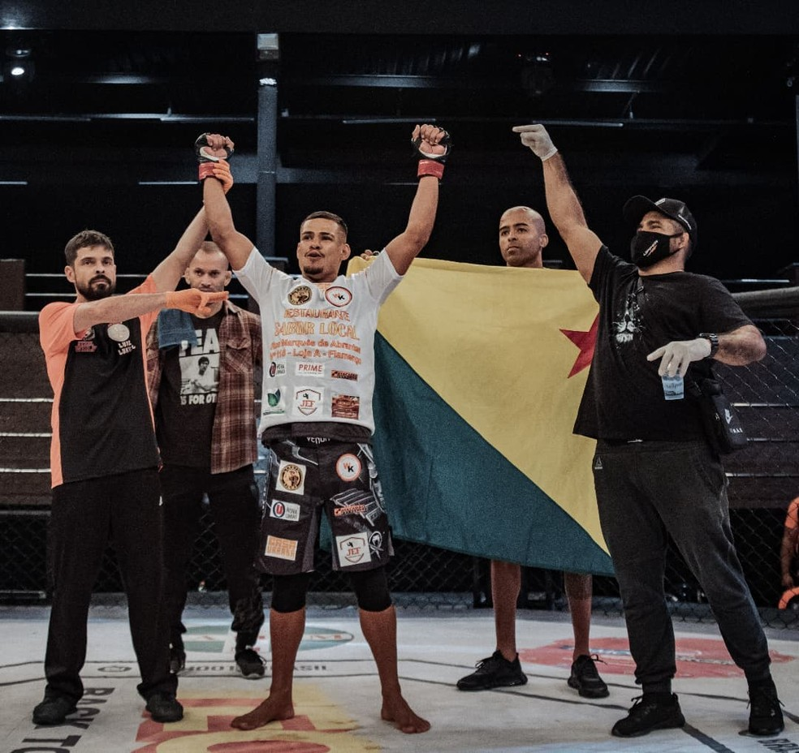
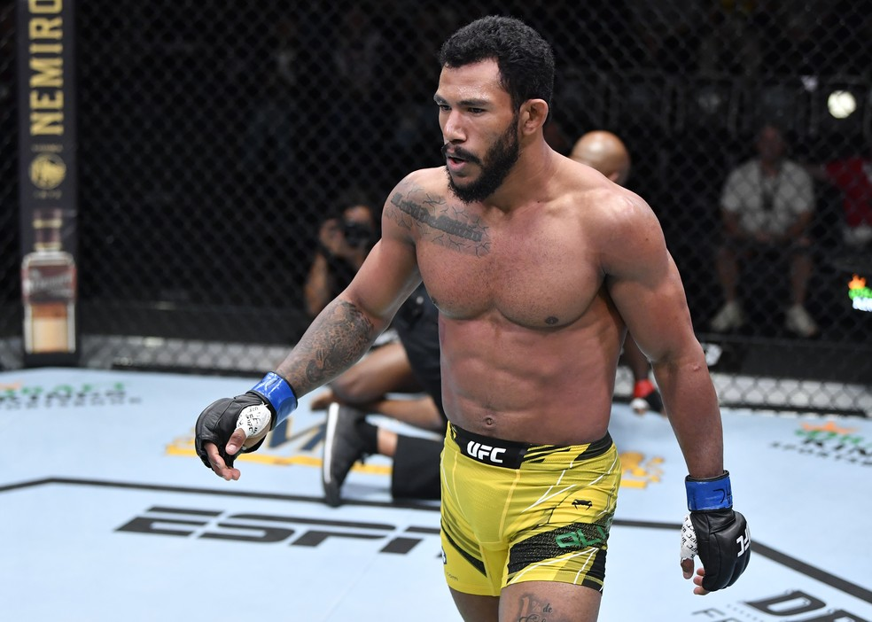
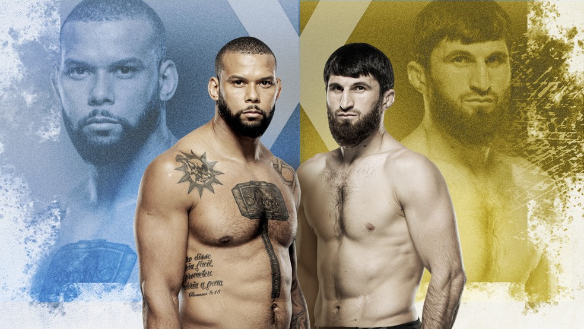

Márcio Ticoto ganha oportunidade por cinturão de evento paulista após nocaute brutal no SFFN
Amapaense invicto com 10 vitórias, sendo 8 nocautes, luta pelo título do RFC, em dezembro.
Patricky Pitbull reflete sobre título no Bellator: "A ficha não caiu, é como se eu fosse pai pela 1ª vez"
Brasileiro, que derrotou Peter Queally e se tornou campeão peso-leve da organização, aprova nome de Brent Primus para primeira defesa e aponta retorno em fevereiro ou março de 2022.
Destaque no Shooto Brasil 109, acreano revela detalhes de vitória relâmpago por nocaute
Wendel Almeida superou Lucas Sayajin dentro do minuto inicial do 1º round, no último sábado, no Rio de Janeiro. Após fechar temporada, lutador projeta retornar seis vezes ao cage em 2022.
Após primeira vitória no UFC, Rafael Alves evita pedidos: "O cara que escolhe adversário é frouxo"
Peso-leve, que finalizou Marc Diakiese em menos de dois minutos de luta no último sábado, também acusa congolês de espionagem em treinos em Houston: "Isso foi muita sacanagem!".
UFC negocia duelo entre Marreta e Ankalaev para liderar card em 13 de março de 2022
Duelo de cinco rounds, que já foi aceito pelas duas partes, coloca frente a frente números 5 e 6 do meio-pesado, respectivamente.
Gilbert Durinho abre a porta para luta contra Khamzat Chimaev: "Se seguir vencendo, por que não?"

Brasileiro elogia o fenômeno checheno e diz saber a razão pela qual Leon Edwards, Colby Covington e Jorge Masvidal nunca o desafiam: "Existe um motivo, e eles sabem qual é".